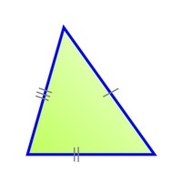

<html>
    <head>
        <meta charset='utf-8'>
        <meta http-equiv='X-UA-Compatible' content='IE=edge'>
        <title>20220816</title>
    </head>
        <body>
            <script lang="javascript">
            var alt, bas, arest, diag, trialt, tribas, n1, n2, n3, n4, a1, a2, km, celsius,V1,V2, v1, v2, p1, p2, media, altura, peso, imc, l1,l2,l3, la, lb, lc, val1, val1, cont, tabu;

            document.write("<h1>Exercício 05: </h1>");
            confirm("A seguir insira quatro valores quaisquer para calcular sua média aritimética.")
           n1 = parseFloat(window.prompt("Insira o primeiro número qualquer: "));
           n2 = parseFloat(window.prompt("Insira o segundo número: "));
           n3 = parseFloat(window.prompt("Insira o terceiro número: "));
           n4 = parseFloat(window.prompt("Insira o quarto número: "));
            document.write("A média aritimética entre os valores informados é: " + ((n1+n2+n3+n4)/4) + "<br>");
            
          document.write("<h1>Exercício 13: </h1>");
          confirm("A seguir insira 3 valores para descobrir se eles formam, ou não, um triângulo e classificar seu tipo.")
        l1 = parseInt(window.prompt("Digite um valor qualquer: "));
        l2 = parseInt(window.prompt("Digite um valor qualquer: "));
        l3 = parseInt(window.prompt("Digite um valor qualquer: "));
        if ((l1 + l2 > l3) && (l2 + l3 > l1) && (l1 + l3 > l2))
    
        {
            if (l1 != l2 != l3)
            {
                document.writeln("Os valores formam um triângulo escaleno. <br>");
                
            }
            else if (l1 = l2 = l3)
            {
                document.writeln("Os valores formam um triângulo isósceles. <br>");
                
            }
            else
            {
                document.writeln("Os valores formam um triângulo equilátero. <br>");
                
            }
        }
        
        else
         {
            document.writeln("Os valores não formam um triângulo. <br>");
         } 
        

        document.write("<h1>Exercício 17: </h1>");
        confirm("A seguir insira um valor qualquer para exibir sua tabuada.")
        do
        {
        tab = window.prompt("Digite um valor positivo qualquer para exibição da sua respectiva tabuada.");
        }while(tabu <= 0)
        tabuada(tabu);

        document.write("<h1>Exercício 19: </h1>");
        var contador = 1;
        var somador = 0;
        do
        {
            somador = contador + somador;
            contador++
        }while(contador <= 100)
        document.write("A soma de todos os números inteiros positivos de 1 a 100 resulta em: " + somador + "<br><br>");

        document.write("<h1>Exercício 20: </h1>");
        var nmr1 = 0;
        var nmr2 = 1; 
        var k;
        document.write("Os trinta primeiros números da sequência fibonacci são: 1 ");
        for (var p = 0; p < 29; p++)
        {
            k = nmr1;
            nmr1 = nmr2;
            nmr2 = k + nmr1;

            document.write(nmr2 + "  ");
        }
      

            </script>
        </body>     
</html>